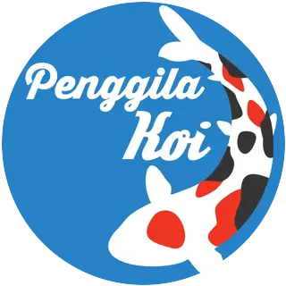

Amonia
Target: tidak terdeteksiLimbah awal dari metabolisme dan sisa organik. Amonia bebas (NH₃) sangat toksik; risikonya meningkat saat pH dan suhu naik.
Jika terdeteksi: hentikan pakan sementara, tambah aerasi, cek sumber limbah dan biofilter.
PENGGILA KOITOOLSTOOLS PRAKTIS UNTUK KOI KEEPER
Mulai dari volume air. Hasil pengukuran yang benar membantu menentukan kapasitas pompa, jumlah pakan, dan dosis treatment.
Hitung volume kolamDASHBOARD
KALKULATOR PERTAMA
Masukkan ukuran bagian dalam kolam. Gunakan kedalaman air aktual, bukan tinggi dinding kolam.
HASIL PERKIRAAN
0 literKALKULATOR PAKAN
Masukkan panjang badan dan jumlah koi pada setiap kelompok ukuran. Sistem mengubah panjang menjadi estimasi berat sesuai kurva referensi, kemudian menjumlahkannya sebagai biomassa.
REKOMENDASI HITUNGAN
0 gram/hariKALKULATOR TREATMENT
Hitung volume air di bak karantina secara terpisah, kemudian tentukan jumlah bahan berdasarkan konsentrasi atau petunjuk produk.
HASIL PERHITUNGAN
0 kgENSIKLOPEDIA RINGKAS
Pelajari warna dasar, pola pembeda, fokus kualitas, dan varietas yang sering tertukar.
Tancho adalah pola berupa satu tanda hi di kepala tanpa hi lain pada tubuh. Doitsu menunjukkan tipe sisik—tanpa sisik penuh atau hanya memiliki baris sisik tertentu—dan dapat muncul pada banyak varietas. Gin Rin menunjukkan sisik yang berkilau reflektif.
EDUKASI KOI
Pahami risiko koi baru dan alasan karantina menjadi perlindungan pertama untuk seluruh kolam.
Baca artikel → KUALITAS AIRPahami perjalanan limbah nitrogen dan apa artinya ketika salah satu parameter meningkat.
Baca artikel → PAKANKenapa jumlah pakan sebaiknya tidak hanya berdasarkan perkiraan atau nafsu makan.
Baca artikel → KESEHATANLangkah dasar menghindari kesalahan dosis akibat volume air yang tidak akurat.
Baca artikel →PANDUAN CEPAT
Limbah awal dari metabolisme dan sisa organik. Amonia bebas (NH₃) sangat toksik; risikonya meningkat saat pH dan suhu naik.
Jika terdeteksi: hentikan pakan sementara, tambah aerasi, cek sumber limbah dan biofilter.Produk antara dari proses nitrifikasi. Nitrit mengganggu kemampuan darah membawa oksigen.
Jika terdeteksi: kurangi beban pakan, tambah aerasi, evaluasi kematangan dan aliran biofilter.Produk akhir nitrifikasi yang relatif kurang toksik, tetapi penumpukan menunjukkan perlunya pengelolaan air.
Jika meningkat: lakukan penggantian air bertahap dan kurangi akumulasi kotoran.Interpretasikan hasil bersama pH, suhu, KH, oksigen terlarut, kondisi ikan, dan petunjuk alat tes yang digunakan.